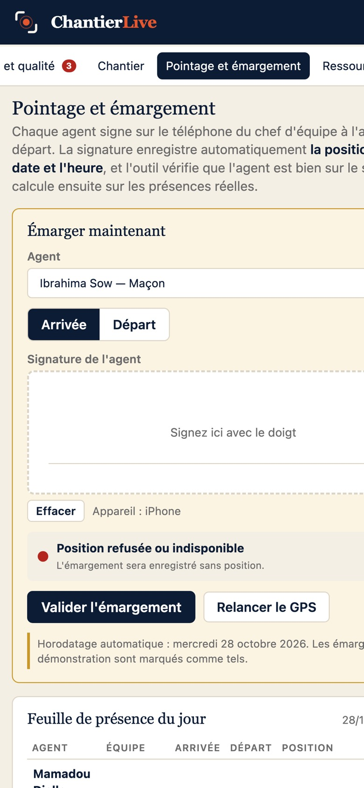

Présences signées, photos horodatées, livraisons, coûts et délais : ce qui se passe réellement sur le terrain, sur un seul écran, à la seconde.
Chaque agent signe du doigt sur le téléphone du chef d'équipe. Position, heure, signature : inaltérables.
Horodatées, géolocalisées, classées par chantier et par zone. Votre preuve à chaque étape clé.
Délai, coût, périmètre, qualité, risques, bénéfices, recalculés à chaque saisie.
Livraison en retard, stock sous le seuil, non-conformité, pointage hors site : par e-mail et WhatsApp.

Le chef d'équipe pointe, photographie, note. Les ouvriers n'ont pas de compte. Sans réseau, tout est conservé puis envoyé.
Le cockpit recalcule en continu. Budget, achats et stocks, effectif et paie, plans et documents, journal de chantier.
Les alertes vous trouvent dans l'application, par e-mail, par WhatsApp. Rapports PDF et exports Excel à tout moment.
contact@chantierlive.com · WhatsApp +237 6 50 15 74 61
chantierlive.com/demo · Paris · Douala · Conakry
ChantierLive est une marque de Paul Mirabeau Byande, exploitée sous licence par LevENT-IT (France) et ETS 2BY Consulting (Cameroun). Données hébergées dans l'Union européenne.